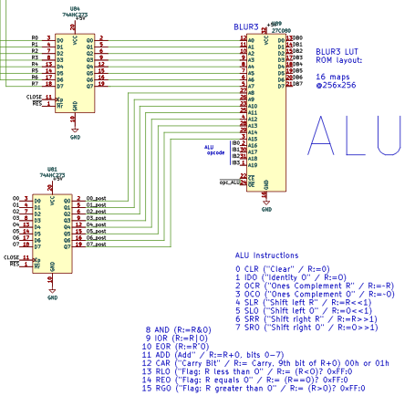

This page explains the Arithmetic-Logic Unit (ALU).
Conceptually, the Myth ALU is a device inside the CPU that takes the values of the two accumulator registers (R and O) as inputs, and computes one of 16 functions from them. The function result is then stored in the R register, overwriting its previous value.
Hardware Implementation
In the KiCad project, the ALU is replaced by a large ROM chip (Binary Look-Up Rom) which contains look-up tables for each function.
The R and O register values are fed into the ROM address lines, together with the four-bit function index. The ROM contents are laid out in such a way that the memory output corresponds to the ALU result.
In the schematics, the R register latches its input value on CLOSE (after the instruction terminates). This is because the ALU result is stored back into R via the data bus (DB0-7), which would otherwise cause a feedback loop (since the ROM used is asynchronous and would update its output based on the new value in R).
